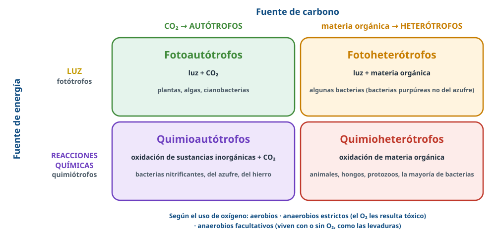
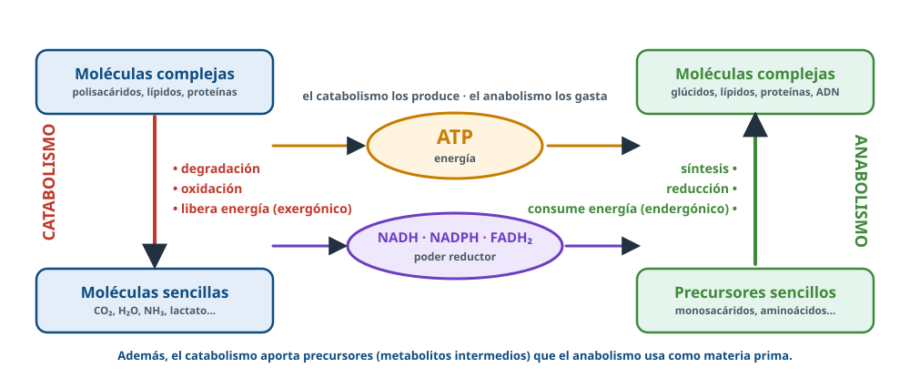
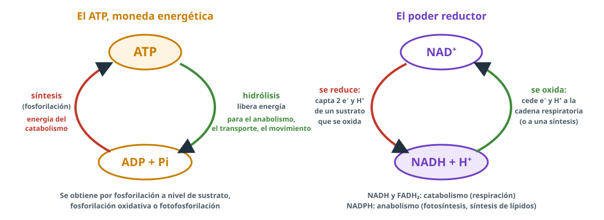
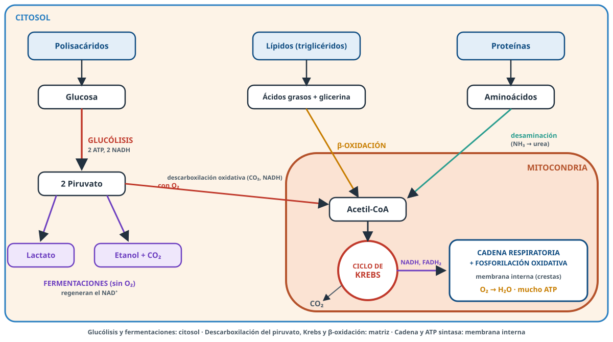
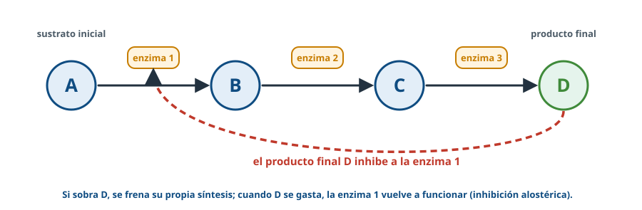

Cómo consiguen las células materia y energía, y la idea general que une todas las rutas metabólicas: degradar para obtener energía y construir gastándola.
Palabra clave = lo que buscan los criterios oficiales de correcciónTexto en violeta = aclaración de BioCelia que no está en los criterios
1Qué entra en la PAU
Directrices de Andalucía 2026-27 · todo lo que entra en este tema
Texto literal de los resultados de aprendizaje de las Directrices y Orientaciones de Biología 2026-27. Cada punto está desarrollado en estos apuntes.
D.1.1 Comprensión de conceptos de anabolismo y catabolismo: Identificación de las diferencias.
Conocer y diferenciar los conceptos de metabolismo y nutrición celular.
Diferenciar los tipos de nutrición celular en función de la fuente de carbono, la fuente de energía y la utilización de oxígeno.
Identificar los principales orgánulos celulares implicados en los procesos de nutrición celular y relacionarlos con su función.
Comprender y diferenciar los conceptos de catabolismo y anabolismo como componentes del metabolismo celular.
Diferenciar las reacciones catabólicas (degradación, oxidación y carácter exergónico) de las anabólicas (síntesis, reducción y carácter endergónico).
Interpretar esquemas generales de catabolismo y anabolismo, reconociendo sus fases principales y rutas metabólicas.
Describir de forma global las principales rutas metabólicas, indicando su localización celular, los sustratos iniciales, los productos finales y su significado energético, sin necesidad de detallar los intermediarios.
Comprender el concepto de poder reductor e identificar el papel del NADH y del NADPH como coenzimas transportadoras de poder reductor, diferenciando su función en procesos catabólicos y anabólicos y las principales rutas metabólicas en las que intervienen.
Conocer el papel del ATP como intermediario energético celular, relacionando su hidrólisis con el acoplamiento de reacciones metabólicas.
D.1.2 Estrategias de interpretación de reacciones metabólicas: metabolismo aeróbico y anaeróbico.
Comprender que la célula puede obtener ATP mediante distintas vías metabólicas, en función de la disponibilidad de nutrientes y de oxígeno.
D.1.3 Desarrollo de destrezas para el cálculo comparativo de sus rendimientos energéticos.
Comparar el rendimiento energético de la respiración celular aeróbica y de la fermentación, atendiendo a la producción de ATP y a la naturaleza de los productos finales, sin necesidad de conocer el balance exacto de ATP.
D.1.4 Reconocimiento de procesos de regulación del metabolismo.
Comprender que las reacciones metabólicas están reguladas mediante el control de la actividad enzimática, lo que permite a la célula ajustar su metabolismo a las condiciones internas y externas, por ejemplo, mediante mecanismos de retroalimentación en los que el producto final de una ruta metabólica inhibe o activa una enzima inicial.
Lo que más se ha preguntado
Definir nutrición, metabolismo, catabolismo y anabolismo; autótrofos, heterótrofos, fotótrofos y quimiótrofos.
Esquema del catabolismo con números: nombrar las rutas y su localización.
Sustratos y productos de cada ruta; ATP y NAD⁺ como transportadores.
Nutrición celular: conjunto de procesos que permiten la introducción de los nutrientes en la célula y su conversión en energía y en las biomoléculas necesarias para las funciones vitales (incluye también la eliminación de los productos de desecho).
Metabolismo: conjunto de reacciones químicas que tienen lugar en la célula. Comprende las catabólicas (degradan biomoléculas obteniendo energía) y las anabólicas (sintetizan moléculas con gasto de energía).
Las reacciones se organizan en rutas metabólicas: secuencias en las que el producto de una reacción es el sustrato de la siguiente, cada una catalizada por una enzima. Los compuestos intermedios se llaman metabolitos.
3Tipos de nutrición

Figura 1. Combinando la fuente de carbono y la de energía.
Criterio
Tipos
Fuente de carbono
Autótrofos: obtienen su materia orgánica a partir del CO₂ (carbono inorgánico). Heterótrofos: la obtienen a partir de otras moléculas orgánicas ya sintetizadas por otros seres vivos.
Fuente de energía
Fotótrofos: usan la energía luminosa para obtener ATP. Quimiótrofos: obtienen ATP de la energía química de las moléculas que oxidan (orgánicas o inorgánicas).
Uso del oxígeno
Aerobios: necesitan O₂ (aceptor final de electrones en la respiración). Anaerobios estrictos: no lo usan y les resulta tóxico. Anaerobios facultativos: viven con o sin O₂ (levaduras, muchas bacterias; también las células musculares cambian a fermentación si falta O₂).
No todos los autótrofos usan la luz (PAU 2024)
Los quimioautótrofos obtienen la energía oxidando compuestos inorgánicos. Una bacteria en un medio sin materia orgánica ni luz toma el carbono de compuestos inorgánicos (CO₂) y la energía de la oxidación de moléculas inorgánicas; con materia orgánica y O₂ pero sin luz, toma el carbono y la energía oxidando la materia orgánica con el oxígeno (quimioheterótrofa aerobia).
4Catabolismo y anabolismo

Figura 2. Las dos caras del metabolismo, unidas por el ATP y el poder reductor.
Catabolismo
Anabolismo
Qué hace
Degradación de moléculas orgánicas complejas en otras más sencillas
Síntesis de moléculas complejas a partir de sencillas
Tipo de reacciones
Oxidaciones (las moléculas pierden electrones)
Reducciones
Energía
Exergónico: libera energía, que se guarda en el ATP
Endergónico: consume energía (ATP)
Produce / gasta
Produce precursores, energía y poder reductor
Gasta ATP y poder reductor
Rutas
Convergentes: muchos compuestos acaban en unos pocos (acetil-CoA, CO₂)
Divergentes: de pocos precursores salen muchas moléculas
Ejemplos
Glucólisis, β-oxidación, ciclo de Krebs, fermentaciones
Fotosíntesis, gluconeogénesis, síntesis de ácidos grasos, de proteínas
Ambos son complementarios y ocurren a la vez: el catabolismo aporta la energía y las moléculas sencillas (aminoácidos, monosacáridos, ácidos grasos…) que el anabolismo utiliza como materia prima. En un organismo que no gana ni pierde masa, ambos están equilibrados.
5El ATP, intermediario energético

Figura 3. El ATP transporta energía; el NADH transporta electrones (poder reductor).
El ATP (adenosín trifosfato) almacena energía en los enlaces entre sus fosfatos. La fosforilación del ADP capta energía de unas reacciones (catabólicas) y la hidrólisis del ATP la cede a otras (ADP + Pi + energía ⇄ ATP). Así se acoplan reacciones exergónicas y endergónicas.
No se almacena en grandes cantidades: se fabrica y se gasta continuamente.
Formas de obtener ATP
Mecanismo
Cómo
Dónde
Fosforilación a nivel de sustrato
Un compuesto fosforilado cede directamente su fosfato al ADP
Glucólisis (citosol), ciclo de Krebs (matriz); única fuente de ATP en las fermentaciones
Fosforilación oxidativa
La cadena de transporte de electrones crea un gradiente de protones que usa la ATP sintasa
Membrana interna de la mitocondria (crestas)
Fotofosforilación
Igual, pero los electrones proceden de los fotosistemas excitados por la luz
Membrana de los tilacoides (cloroplasto)
Verdadero o falso (PAU 2024)
«La fosforilación a nivel de sustrato genera la mayor parte del ATP de la respiración» → Falsa: la mayor parte la genera la fosforilación oxidativa.
6El poder reductor
En las oxidaciones del catabolismo se liberan electrones y protones que recogen coenzimas transportadoras. Cuando están cargadas (reducidas) se dice que tienen poder reductor: pueden ceder esos electrones a otra molécula.
El NAD⁺capta electrones y protones de algunas moléculas en reacciones de deshidrogenación (se reduce a NADH) y los cede a otras moléculas (se oxida).
NAD⁺/NADH y FAD/FADH₂: sobre todo en el catabolismo; ceden sus electrones a la cadena respiratoria, donde se obtiene ATP.
NADP⁺/NADPH: sobre todo en el anabolismo; se produce en la fase luminosa de la fotosíntesis y se gasta en el ciclo de Calvin y en la síntesis de ácidos grasos.
Por eso las coenzimas de óxido-reducción de la respiración y de la fotosíntesis son distintas (PAU 2024).
7Esquema general del catabolismo

Figura 4. Mapa global del catabolismo. Las preguntas con números suelen ser como este esquema.
Ruta
Dónde
Sustratos iniciales
Productos finales
Glucólisis
Citosol
Glucosa, ADP + Pi, NAD⁺
2 ácido pirúvico, ATP, NADH
Fermentaciones
Citosol
Piruvato, NADH
Lactato, o etanol + CO₂; NAD⁺
Descarboxilación oxidativa
Matriz mitocondrial
Piruvato, NAD⁺, CoA
Acetil-CoA, CO₂, NADH
β-oxidación
Matriz mitocondrial
Ácidos grasos (activados con CoA)
Acetil-CoA, NADH, FADH₂
Ciclo de Krebs
Matriz mitocondrial
Acetil-CoA, NAD⁺, FAD, GDP
CO₂, NADH, FADH₂, GTP
Cadena de transporte
Membrana mitocondrial interna
NADH, FADH₂ y O₂
NAD⁺, FAD y H₂O
Fosforilación oxidativa
Membrana mitocondrial interna (ATP sintasa)
ADP + Pi
ATP
Las proteínas se usan poco como combustible: sus aminoácidos pierden el grupo amino (que se elimina como urea en los mamíferos) y su esqueleto de carbono entra en el metabolismo como piruvato, acetil-CoA o intermediarios del ciclo de Krebs.
8Con oxígeno y sin oxígeno: rendimiento
La célula puede obtener ATP por distintas vías según los nutrientes y el oxígeno disponibles:
Porque la glucosa no se oxida por completo: gran parte de su energía queda en el lactato o el etanol, y no hay cadena respiratoria. La fermentación solo sirve para regenerar el NAD⁺ y que la glucólisis pueda seguir. Un ácido graso rinde más que una hexosa porque produce más acetil-CoA, el ciclo de Krebs funciona más veces y se obtiene más ATP.
Las directrices no piden el balance exacto. Como orientación, los libros recientes dan unos 30-32 ATP por glucosa en la respiración aerobia (los antiguos, 36-38) frente a 2 en la fermentación.
9Orgánulos de la nutrición celular
Lugar
Procesos
Citosol
Glucólisis, fermentaciones, síntesis de ácidos grasos, gluconeogénesis (en parte), síntesis de glucógeno
Mitocondria
Respiración celular: descarboxilación del piruvato, ciclo de Krebs y β-oxidación (matriz); cadena respiratoria y fosforilación oxidativa (membrana interna)
Cloroplasto
Fotosíntesis: fase luminosa (tilacoides) y ciclo de Calvin (estroma)
Ribosomas y RER
Síntesis de proteínas
REL
Síntesis de lípidos de membrana y esteroides
Peroxisomas
Oxidación de ácidos grasos de cadena muy larga y detoxificación; glioxisomas en semillas
Lisosomas
Digestión intracelular de macromoléculas
Las células procariotas, sin mitocondrias, hacen la respiración en la membrana plasmática y el ciclo de Krebs en el citosol.
10Regulación del metabolismo
La célula ajusta su metabolismo a sus necesidades controlando la actividad de las enzimas. El mecanismo más típico es la retroalimentación negativa (retroinhibición): el producto final de una ruta inhibe una enzima inicial; si se acumula, la ruta se frena, y si se gasta, se reactiva. También hay activación: un metabolito puede activar una enzima y acelerar una ruta cuando la célula lo necesita.

Figura 5. Retroinhibición de una ruta metabólica.
Ejemplo: cuando hay mucho ATP en la célula, el propio ATP inhibe una enzima de la glucólisis (la fosfofructoquinasa) y se degrada menos glucosa; cuando falta energía, el AMP, que se acumula, activa esa misma enzima y la glucólisis se acelera. También regulan el metabolismo las hormonas: la insulina favorece la síntesis de glucógeno y el glucagón, su degradación.
Además, catabolismo y anabolismo de una misma molécula usan enzimas distintas y, a menudo, compartimentos distintos (por ejemplo, la síntesis de ácidos grasos en el citosol y su degradación en la mitocondria), lo que permite regularlos por separado.
11Así se pregunta en la PAU
PAU 2017 · Reserva A (y 2010, 2013, 2016)2 puntos
a) Defina nutrición celular y metabolismo [1]. b) Explique qué son organismos autótrofos, heterótrofos, fotótrofos y quimiótrofos [1].
Ver respuesta modelo
a) Nutrición: procesos que permiten la introducción de los nutrientes en la célula y su conversión en energía y biomoléculas necesarias para las funciones vitales. Metabolismo: conjunto de reacciones químicas que tienen lugar en la célula.
b) Autótrofos: materia orgánica a partir del CO₂. Heterótrofos: a partir de otras moléculas orgánicas. Fotótrofos: energía luminosa para obtener ATP. Quimiótrofos: ATP a partir de la energía química de las moléculas que oxidan.
PAU 2018 · Suplente septiembre (y 2014)2 puntos
Defina: a) metabolismo; b) catabolismo; c) anabolismo; d) glucólisis; e) fermentación [2].
Ver respuesta modelo
a) Conjunto de reacciones químicas de la célula, catabólicas y anabólicas. b) Reacciones de degradación de macromoléculas para obtener precursores, energía y poder reductor. c) Procesos en los que la célula sintetiza, con gasto de energía, sus sustancias. d) Reacciones que convierten la glucosa en ácido pirúvico con liberación de energía (ATP). e) Degradación anaeróbica de la glucosa con una molécula orgánica como aceptor final de electrones.
PAU 2024 · Titular B2 puntos
Defina: a) metabolismo [0,4]; b) anabolismo [0,4]; c) catabolismo [0,4]. d) Explique una diferencia entre las células fotoautótrofas y las quimioautótrofas [0,8].
Ver respuesta modelo
a) Conjunto de reacciones bioquímicas de la célula. b) Síntesis de moléculas complejas a partir de sencillas con gasto de energía (ATP). c) Degradación de moléculas orgánicas para obtener energía (ATP). d) Las fotoautótrofas usan la energía luminosa para sintetizar ATP; las quimioautótrofas, la energía química de las moléculas que oxidan.
PAU 20102 puntos
Clasifique los seres vivos según su fuente de carbono [0,2] e indique en cada grupo un proceso anabólico y otro catabólico con sus productos finales [0,8]. Clasifíquelos según su fuente de energía [0,2]. Explique el funcionamiento del ATP en la transferencia de energía y del NAD⁺ en la transferencia de electrones y protones [0,8].
Energía luminosa: fotótrofos; química: quimiótrofos. La fosforilación de ADP capta energía de unas reacciones que se cede a otras con la hidrólisis del ATP. El NAD⁺ capta electrones y protones (se reduce) en deshidrogenaciones y los cede a otras moléculas.
PAU 20152 puntos
Indique los sustratos iniciales y productos finales de: glucólisis, β-oxidación, ciclo de Krebs, cadena de transporte electrónico y fosforilación oxidativa [2].
Ver respuesta modelo
Glucólisis: glucosa, ADP+Pi, NAD → ácido pirúvico, ATP, NADH. β-oxidación: ácidos grasos → acetil-CoA. Krebs: acetil-CoA, NAD, FAD, GDP → CO₂, NADH, FADH₂, GTP. Cadena: NADH, FADH₂ y O₂ → NAD, FAD y H₂O. Fosforilación oxidativa: ADP + Pi → ATP.
PAU 2024 · Suplente B (y 2018)1 puntoCon imagen
En un esquema del catabolismo: a) Nombre los procesos 1 a 4 [0,4]. b) ¿Dónde ocurren 1, 3 y 4 en las células eucarióticas? [0,3] c) ¿Qué nombre reciben las reacciones 5 y qué productos son A y B? [0,3]
Ver respuesta modelo
a) 1: glucólisis; 2: descarboxilación oxidativa; 3: β-oxidación; 4: ciclo de Krebs. b) 1: citosol; 3 y 4: mitocondrias. c) 5: fermentaciones; A: etanol; B: ácido láctico.
PAU 2024 · Titular A1 punto
Verdadero o falso: a) En el catabolismo se sintetizan moléculas orgánicas a partir de inorgánicas, son oxidaciones y generan energía. b) La fosforilación a nivel de sustrato genera la mayor parte del ATP de la respiración. c) Todos los autótrofos usan la energía luminosa. d) Las coenzimas de óxido-reducción de la respiración y la fotosíntesis son distintas.
Ver respuesta modelo
a) Falsa: el catabolismo degrada moléculas orgánicas. b) Falsa: la mayor parte la genera la fosforilación oxidativa. c) Falsa: los quimioautótrofos obtienen energía oxidando compuestos inorgánicos. d) Verdadera: en la respiración, NAD⁺/NADH y FAD/FADH₂; en la fotosíntesis, NADP⁺/NADPH.
PAU 20131 punto
¿Por qué la oxidación de un ácido graso rinde más que la de una hexosa? [0,5] Desde un punto de vista evolutivo, ¿qué usaron primero las células: azúcares o grasas? [0,5]
Ver respuesta modelo
El ácido graso produce más acetil-CoA, el ciclo de Krebs funciona más veces y se obtiene más ATP. Primero los azúcares, en anaerobiosis: aprovechar las grasas requiere un ambiente aerobio, que apareció después.
PAU 2025 · Asturias2,5 puntosCompetencial
Un adulto de 80 kg con un 25 % de grasa hace musculación durante un año: baja al 11 % de grasa y aumenta su masa muscular, pero mantiene los 80 kg. 1) ¿Han predominado las rutas anabólicas o las catabólicas? [1] 2) Describa una ruta catabólica y otra anabólica que hayan ocurrido y dónde [1]. 3) ¿Lo habría conseguido con una dieta rica en glúcidos y pobre en proteínas? [0,5]
Ver respuesta modelo
1) Como el peso no cambia, el catabolismo y el anabolismo están equilibrados(ha degradado grasa y ha sintetizado proteína muscular).
2) Catabólica: lipólisis y β-oxidación en la matriz mitocondrial → acetil-CoA → ciclo de Krebs → cadena respiratoria y ATP sintasa. Anabólica: síntesis de proteínas en los ribosomas del citoplasma o del RER.
3) No: la dieta debe ser rica en proteínas, porque hay aminoácidos esenciales que no podemos sintetizar.
Práctica BioCelia · estilo 26-271 punto
En las fuentes hidrotermales del fondo marino, donde no llega la luz, viven bacterias que oxidan el sulfuro de hidrógeno (H₂S) que sale de las chimeneas y fabrican materia orgánica a partir del CO₂. a) ¿Qué tipo de nutrición tienen? Razone [0,5]. b) ¿Por qué se dice que sostienen todo el ecosistema? [0,5]
Ver respuesta modelo
a) Quimioautótrofa (quimiosintética): el carbono procede del CO₂ (autótrofa) y la energía de la oxidación de una sustancia inorgánica, el H₂S (quimiótrofa). b) Porque son los productores primarios: fabrican la materia orgánica de la que dependen, directa o indirectamente, los demás organismos de la fuente hidrotermal, como harían las plantas en un ecosistema con luz.
Práctica BioCelia · estilo 26-271 punto
En una bacteria, la síntesis del aminoácido isoleucina se realiza mediante una ruta de cinco enzimas. Si se añade isoleucina al medio de cultivo, la bacteria deja de fabricarla en pocos minutos, aunque sigue teniendo las enzimas. a) Explique este hecho [0,6]. b) ¿Qué ventaja tiene para la bacteria? [0,4]
Ver respuesta modelo
a) Es una retroinhibición: la isoleucina, producto final de la ruta, se une a la primera enzima y la inhibe, de modo que toda la ruta se detiene aunque las enzimas sigan presentes. b) Ahorra energía y precursores: no fabrica lo que ya tiene disponible, y la ruta se reactiva en cuanto la isoleucina escasea.
Diferencia nutrición y metabolismo. VerNutrición: entrada de nutrientes y su conversión en energía y biomoléculas. Metabolismo: conjunto de reacciones químicas de la célula.
¿Qué tipo de nutrición tiene un hongo? VerQuimioheterótrofa.
¿Qué es un anaerobio facultativo? VerEl que puede vivir con o sin oxígeno (levaduras).
¿El catabolismo es oxidativo o reductor? ¿Exergónico o endergónico? VerOxidativo y exergónico.
¿Qué tres formas hay de sintetizar ATP? VerFosforilación a nivel de sustrato, fosforilación oxidativa y fotofosforilación.
¿Qué coenzima aporta poder reductor al anabolismo? VerEl NADPH.
¿Dónde ocurren la glucólisis y el ciclo de Krebs? VerEn el citosol y en la matriz mitocondrial.
¿Qué molécula une el catabolismo de glúcidos, lípidos y proteínas? VerEl acetil-CoA.
¿Por qué la fermentación rinde poco ATP? VerPorque la oxidación de la glucosa es incompleta y no hay cadena respiratoria: solo el ATP de la glucólisis.
¿Qué es la retroinhibición? VerEl producto final de una ruta inhibe una enzima inicial de esa ruta.
Fuentes: Directrices y orientaciones de la PAU de Biología de Andalucía (curso 2026-27); criterios oficiales de corrección de la PAU de Andalucía (2010-2024) y de otras comunidades (2025); resúmenes del departamento; Lehninger, Principios de bioquímica; Campbell y Reece, Biología. Esquemas: elaboración propia de BioCelia.